Opportunities and Challenges Around a Tool for Social and Public Web Activity Tracking
Authors
Amy X. Zhang, MIT CSAILJoshua Blum, MIT CSAIL
David Karger, MIT CSAIL
Abstract
While the web contains many social websites, people are generally left in the dark about the activities of other people traversing the web as a whole. In this paper, we explore the potential benefits and privacy considerations around generating a real-time, publicly accessible stream of web activity where users can publish chosen parts of their web browsing data. Taking inspiration from social media systems, we describe individual benefits that can be unlocked by such sharing and that may incentivize users to publish aspects of their browsing. We ask whether and how these benefits outweigh potential costs in lost privacy. We conduct our study of public web activity sharing through scenario-based interviews and a field deployment of a tool for web activity sharing.
Presentation
This talk was given at CSCW 2016 in San Francisco, CA.
So first, I'm going to talk a bit about the status quo and what is really the motivation for this study and the tool we eventually built.
Then I'm going to go into some considerations about the design space and privacy based on interviews we conducted before discussing a tool that we built and then studied in a field study.
Today, web tracking is a huge industry, where tons of effort and money is going into tracking the browsing activity of people online.
Everybody wants this data because it tells us a lot about people.
We researchers don't really have access to this data because it can be so sensitive and personal. For instance, the infamous AOL query log dataset from the 90s was an anonymized dataset for researchers but actually leaked personal information.
However, there are a lot of companies that do have access to this data, including big ones like Google and Facebook but little ones you may not have heard of like Quantcast, Undertone, Traffic Marketplace.
Some of these are large ad networks that get your browsing data from banner ads or little javascript snippets or cookies.
Even software you download for purposes such as security can and do take your browsing information.
These companies can also turn around and sell your data to others.
So the current status quo around browser tracking is totally broken. Researchers can't access data for the public good, people who create the data can't use it for their own benefit, companies have all the data and all the power when making products.
People think they are having a private, personal experience but are actually sharing that experience with God knows who, who can turn around and sell it or accidentally leak it to the public. So what can we do about this?
Without laws in place, we can't fix all of these problems. But we can maybe demonstrate what a potential future without indiscriminate browser tracking might look like.
A future where browsing data can be used to benefit the people that create the data as well as the public good, and not just corporations.
And to do this, one place where we got inspiration is from social media.
In social media, traditional surveillance is turned on its head to become peer or social surveillance.
That is people choose what to share and who to share it with, sometimes choosing the public.
There's also an ecosystem in place to cater to users' needs to encourage them to share on their platform.
Finally, when the data is publicly available, it's led to new and interesting research and active development.
So what social and personal benefits could we potentially derive from sharing something like browsing data with each other?
Here's where I'm going to get into some of the benefits that we might derive from sharing aspects of our browsing data. And some of these things already exist in small pockets of the web or in apps and I'll give examples.
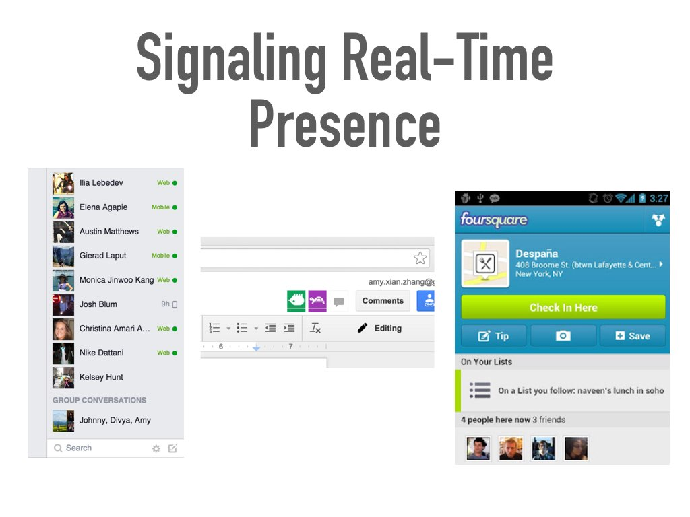
One thing that some applications and websites allow is real-time presence of other people on that application or website.
One example is places like Facebook or Google Hangouts that let you know who is online at that moment.
Other places include Google Docs, where you can see who else is on that doc at the moment (and can also be anonymous). Finally, in real-life,
applications like Foursquare let you see who else is currently in a place with you.
Another feature is chatting and commenting anchored to a particular page or place. Many news places on the web
allow you to add comments at the bottom of an article. There are also some pages that have anchored real-time chat.
Finally, you can also leave comments and reviews about real-life places in Yelp or Foursquare.
Another feature is ambient awareness of others. This can be in the form of a feed, for instance, the feed in Facebook that shows
more real-time activity. It can also be in the form of a bar like in Spotify, where you can see what people are currently listening to.
Transparency is another potential benefit that is often salient in more work-oriented environments such as on Github or
Wikipedia. On these websites, you can see a log or feed of recent activity by other participants.
Reflection and self improvement are potential personal benefits of sharing browsing activity.
The application RescueTime currently privately collects one's browsing activity in order to
show to the user how much time they've spent on different sites. This information can help
users manage their time or try to change their online browsing habits.
In addition, some applications for self-improvement have a social element that
allows them to share their activity with friends. These include many fitness or diet applications
on the market.
Self-presentation is a natural component of most social media application. People can use social
applications to present themselves in a certain light or develop a public persona.
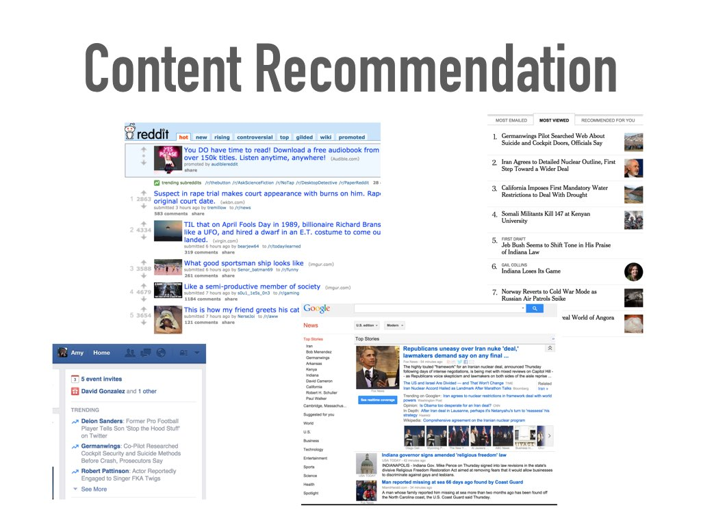
Finally, there are many places on the web, including applications made by the major companies
that provide content recommendation, such as for news articles.
Besides enumerating and describing the possibilities around sharing browsing activity,
we also wanted to ask people their thoughts around what they would find useful or interesting.
To do this, we interviewed three sets of friend/acquaintance groups. Later we use these
groups in our field study of our application, which is why we specifically sought out groups of
people that knew each other.
We conducted one-on-one semi-structured interviews from 30 minutes to 80 minutes.
We presented the interviewees with scenarios and showed them screenshots of existing applications like
the ones mentioned earlier while discussing sharing browsing activity.
For the participants, we interviewed one set of close friends, one set of journalist acquaintances,
and one set of more technical people.
We were interested in hearing from journalists because (taking cues from sites like Twitter) we thought
they might have a particular interest in such a tool and they are more used to navigating a more public space online.
We were also interested in more technical people who would have a better understanding of privacy and who conduct much of their
work online.
When it came to self-presentation, this feature was more of a draw for the News interviewees,
most of whom already had active public Twitter profiles. However, Friends were also interested
in presenting a specific self to their friends.
Along with self-presentation is transparency, which was very salient to both News and Tech.
This particular journalist was interested in sharing how she conducted research online with others.
Likewise Tech people saw parallels between this and places like Github for when they were conducting work online.
Many interviewees mentioned potentially being more mindful of how they consume content if they were sharing it with others.
Content recommendation was the most liked of all the features we described to interviewees.
Here is an example from the perspective of a News person about understanding what people were reading.
Friends and Tech were also interested in seeing what their friends read online.
But wait! There are a lot of privacy issues with sharing browsing data,
even if we are ALREADY giving it all away to corporations.
So now we'll discuss some of the privacy implications that we considered and privacy design decisions.
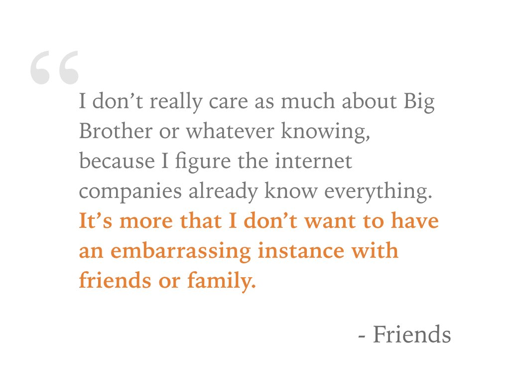
This quote exemplifies the concern when it comes to sharing with friends or family as opposed to
random strangers or various companies or the government.
These were the different fears that interviewees expressed when it came to sharing aspects of their
browsing data.
In the end, we should design a system that is explicit and
respects users' expectations.
There should be no surprises for the user.
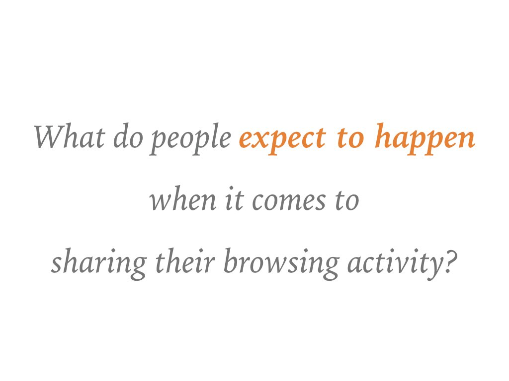
So given that, what are people's expectations when it comes to sharing
browsing data?
So our interviewees said, echoing previous work, that they want to have a say over whether or not they are tracked.
Ownership means the power to share what browsing data they want and also the power to take it away or give it to someone else.
Unfortunately, many corporations currently operate with little awareness, and users have little recourse or say over their tracking.
All interviewees agreed that different websites and topics on the web had different levels of privacy to them.
Some examples of areas where they preferred greater secrecy included medical sites, dating, shopping, politics, and banking.
Unfortunately most tracking today is comprehensive and not context-dependent.
We'll talk about how we use this information later.
Most interviewees expected that if they released their browsing data, it was because they were getting something useful or valuable in return.
However, companies exist that simply track or buy tracking data, or do so surreptitiously.
Sometimes they disliked some of the things they got in return, such as personalized ads or recommendations.
Users also little recourse to affect the results of tracking.
So anything we build in the end needs to demonstrate usefulness or interestingness to the user.
Now I'll describe the tool we built!
So this is the tool that we built that we called Eyebrowse.
It consists of a website and a companion Google Chrome extension.
While a lot of the things I talked about are relevant even in a non-public setting,
so sharing only with friends or certain groups,
Eyebrowse is actually fully public.
And I'll loop back at the end to discuss why we chose to make the tool that way.
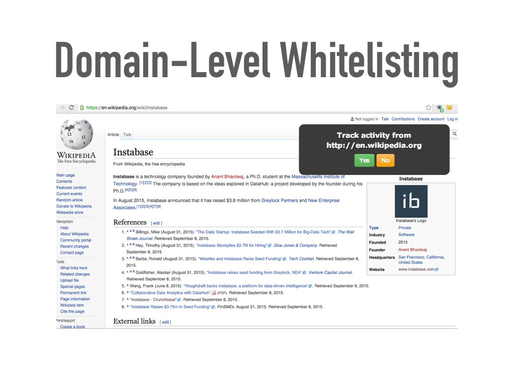
Because of our finding earlier that people expect differing levels of privacy on different websites, we used a domain-level whitelisting behavior.
By default, nothing is shared on Eyebrowse.
While browsing the web, the extension shows a popup on the corner right every now and then asking if you would like
to whitelist this domain.
If you click yes, the domain is added to your whitelist and visits within that domain are shared.
If you click no, the popup won't show up for that domain ever again.
You can build up a whitelist as you browse around on the web.
This is the start of my whitelist developed over time.
In addition to whitelisting, people can share a particular page in a one-off situation.
They can also turn off eyebrowse for some time, kind of like Chrome's incognito mode.
Now I'll discuss some of the features that we added to Eyebrowse.
As I said earlier, people expect a trade for contributing their data.
So what can we provide to them?
The intent of these features was to build in things that people would find
interesting and/or useful,
and are examples of the different social and personal features that we mentioned earlier.
The first feature is the activity feed.
The first feature is the activity feed.
This provides content recommendations from friends as well as let you know
what your friends have been reading lately.
You can also look at the firehose, which is all visits made by everyone on the platform.
You can sort the feed by different attributes.
The default one is one that combines the other metrics and
includes a measure of recency. You can see a real-time feed which
updates automatically.
You can also search for different keywords or urls/domains and
specify a specific time period (like "last year", "last week").
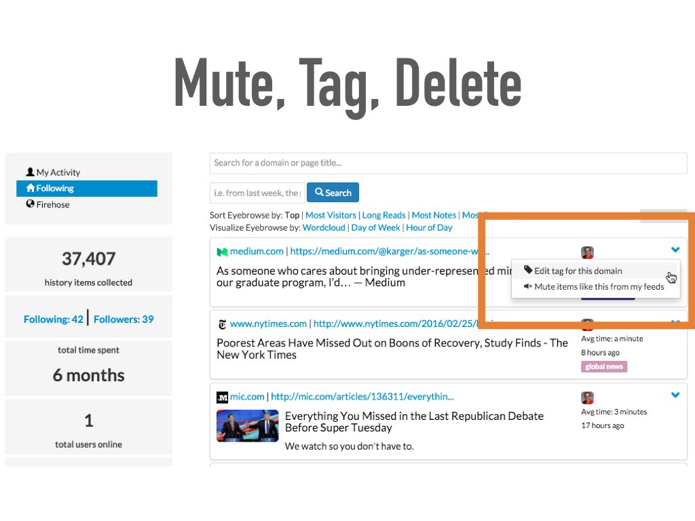
You can also mute a particular domain, subdomain, or key term from your
feeds if you don't want to see visits containing those anymore.
Also, you can add personal tags to different domains. These tags are meant for you
to help you better organize or see which visits are what. They are not publicly viewable.
Finally, on your own profile page, you can additionally delete visits permanently.
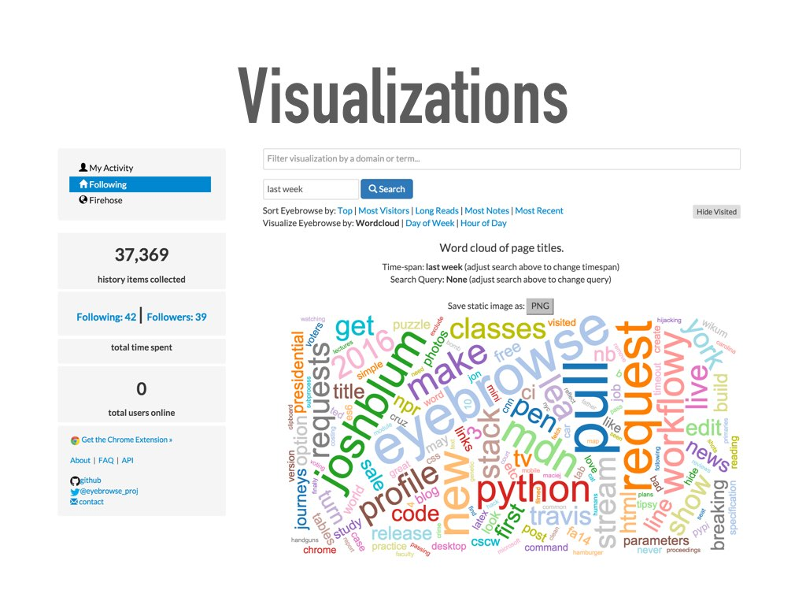
We provide a set of simple visualizations for users to see.
You can see visualizations for your followees or the firehose as well as for any
particular person
(and the visualizations respond to search queries and specific time ranges).
We also add the ability to download a static image of any visualization
you see and the ability to add a widget to your webpage that will show
the live version of the visualization.
One example is a word cloud of page titles.
One example is a word cloud of page titles.
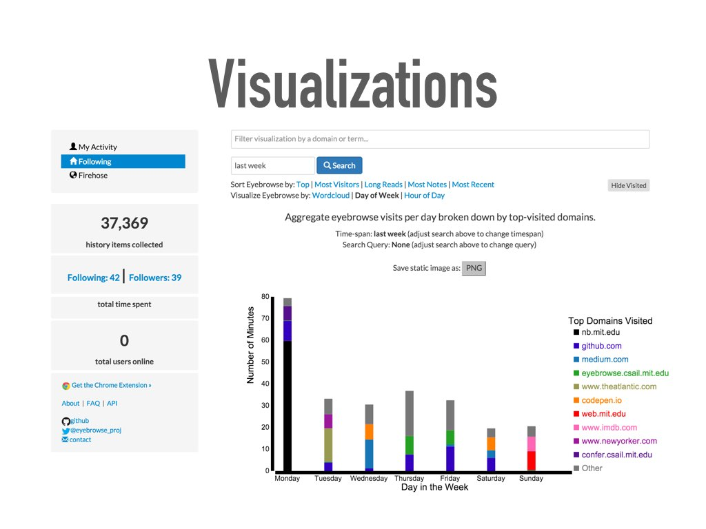
We also show stacked bar charts of most visited domains broken down by
day of the week and hour of the day.
Here's an example of a profile page (mine!)
There are also social applications while browsing around on the web.
On any page, you can click the eye-con to see who of your friends have
been there recently. You can also participate in the public chat room for that
specific page (which don't
get published elsewhere) or leave a note (which get published on your feed).
You can @ tag any of your followees and they'll get a notification that
you were mentioned.
Additionally, without clicking on the icon, you will see small popups in the corner of your browser while you are browsing around on the web. The popups show a followee's profile picture if they've been on that page or domain recently. They can also show the latest chat or note left behind. If the person is *currently* on that page, their icon will be bordered in yellow to let you know that you "bumped" into them.
Additionally, without clicking on the icon, you will see small popups in the corner of your browser while you are browsing around on the web. The popups show a followee's profile picture if they've been on that page or domain recently. They can also show the latest chat or note left behind. If the person is *currently* on that page, their icon will be bordered in yellow to let you know that you "bumped" into them.
Ok, now I'll describe the results of a field study we
conducted using the tool.
This field study was a week long and involved 4 friend/acquaintance groups, followed
by a post-field study survey.
Three of the groups were the same people that participated in the interviews.
We added an additional friend group in order to get more participants trying out
Eyebrowse.
Overall people were overall active sharers and were engaged on the site.
We didn't ask the participants to whitelist anything so they could have
used Eyebrowse the entire week and not shared anything.
We did ask them to create an account and follow
some of their friend/acquaintances and visit the eyebrowse home page once a day.

This graph shows the level of sharing per day by different people.
Some people shared a ton of visits while others did not share anything.
We also had several participants use Eyebrowse for longer than the required 7 days.
Some people used the tool for months - almost 3 months in the longest cases.
This graph shows each group's whitelisting behavior over time.
It shows how people can cultivate their personal whitelist slowly over time while
browsing the web, instead of all at once.
When it came to social interaction over the course of the week,
most of the interactions happened in the News group, potentially because they had more experience
and comfort commenting and discussing in the public sphere online.
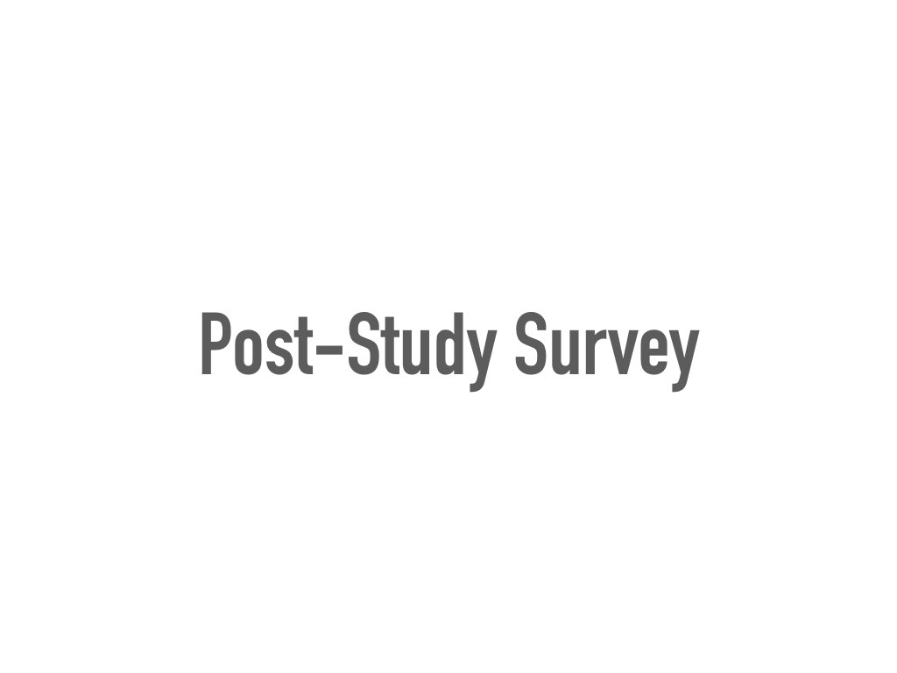
Now I'll get to some results of the post-study survey.
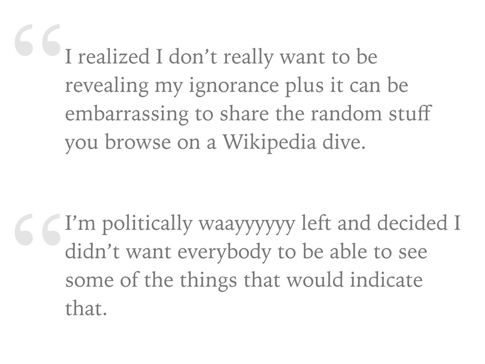
Some people
started out by sharing certain sites but then changed
their mind part way through the field study
because they realized that they were sharing some information that
they didn't want to be known.
Similarly some people became more aware of the personal aspect of their browsing data
and in the end decided not to share anything.
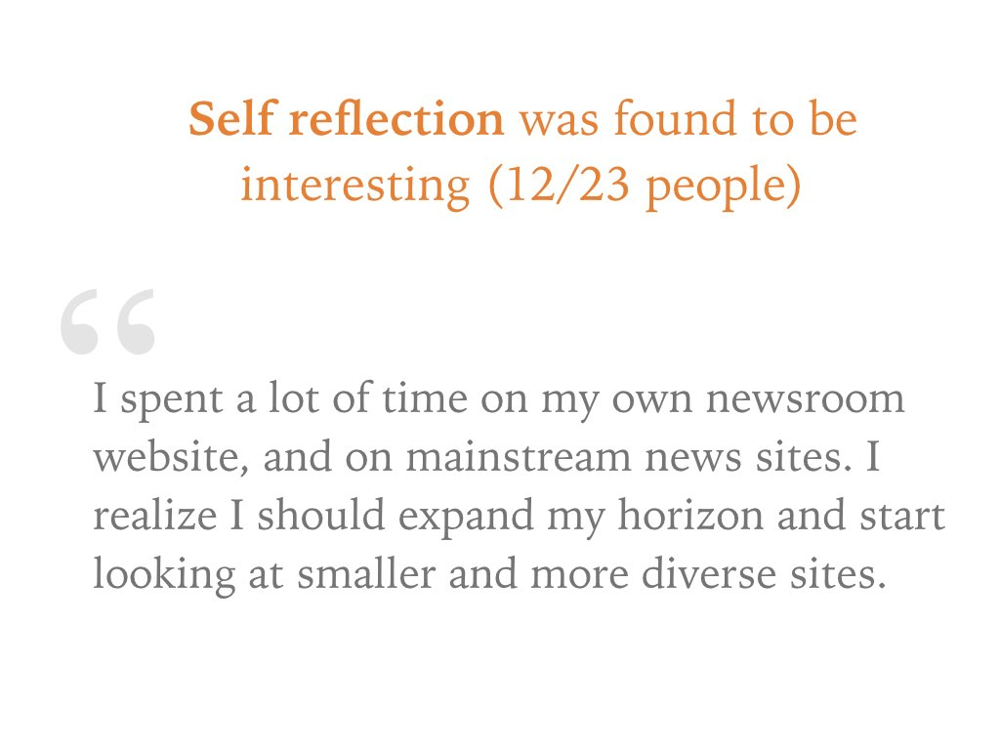
Many field study participants were interested in the self-reflection abilities that Eyebrowse
gave them. This participant realized that they wanted to change how they read the news
based on their browsing data.
The reaction to the social features were mixed, possibly because
some groups used it more than other groups.
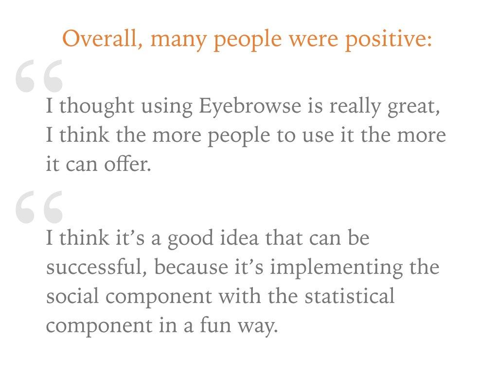
Overall many participants had positive things to say about Eyebrowse.
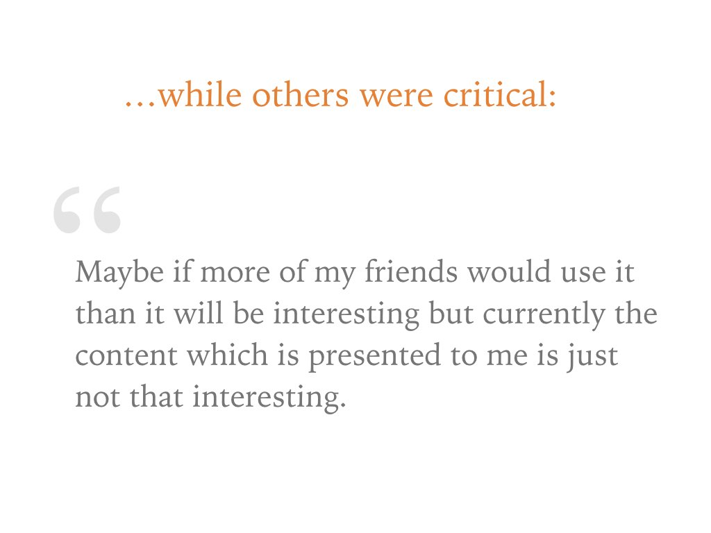
Some people's reactions were more negative, mostly around needing to improve
the features given.
Now I'll wrap up and point out some final takeaways.
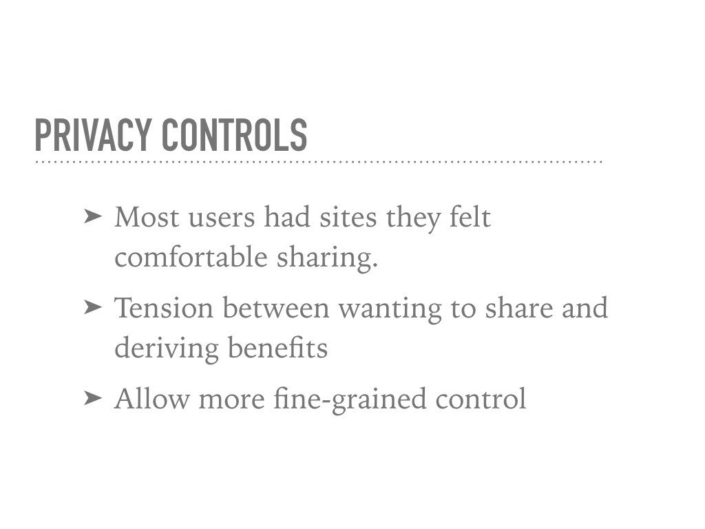
Whitelisting of domains was overall a success.
However, there were cases however of people wanting more fine-grained access.
For instance, they wanted to track their overall time spent on Facebook but didn't want to
show individual pages.
In the future we should develop the ability to have more fine-grained but also optional privacy controls.
When it came to the features, the field study demonstrated many ways forward.
In its raw form, the browsing data is very noisy. More sophisticated methods for
content recommendation will need to be used.
Also, a larger deployment to more people might result in more interesting social usage.
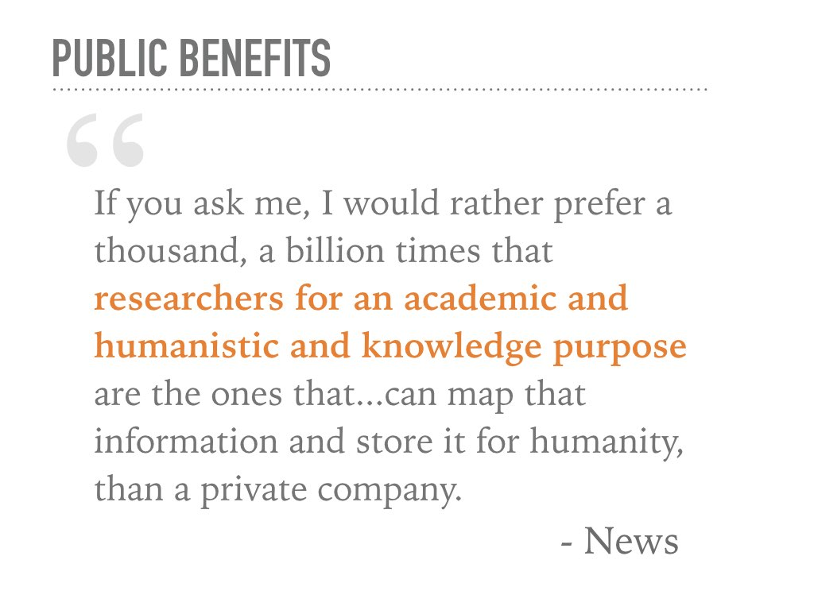
Before we close - back to why we made Eyebrowse public.
As this interviewee expressed, one benefit of making this data publicly available
is the potential benefits for the public good, including letting researchers and
developers build on the data to make new insights and build new applications
to benefit users.
So with that in mind, we also have an API for anyone to easily access the data and build on top of. There are lots of potential applications and we don't
have the ability to build all of them so we welcome development and analysis.
Let's build an ecosystem to let users harness the power of their collective and individual browsing data!
Thank you!